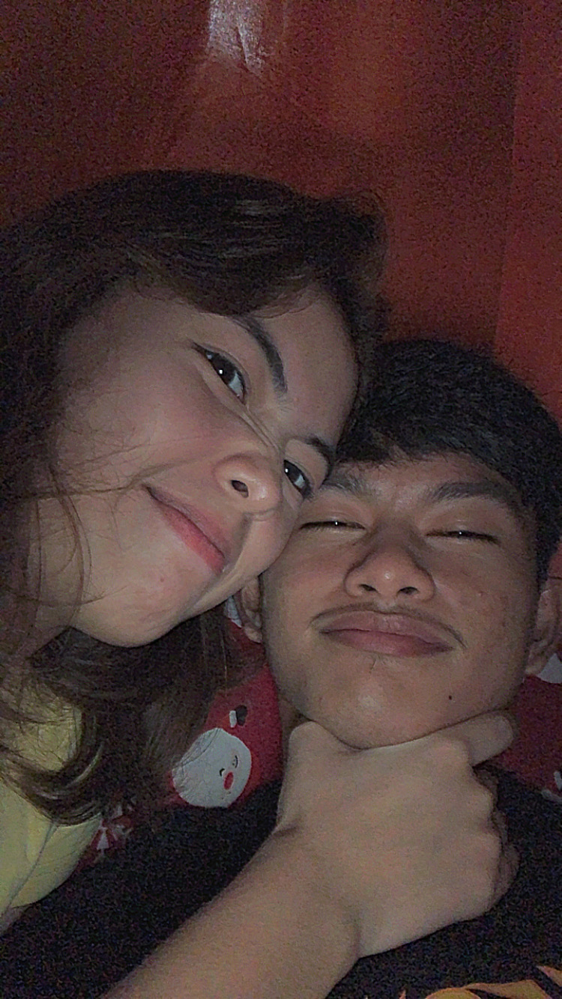
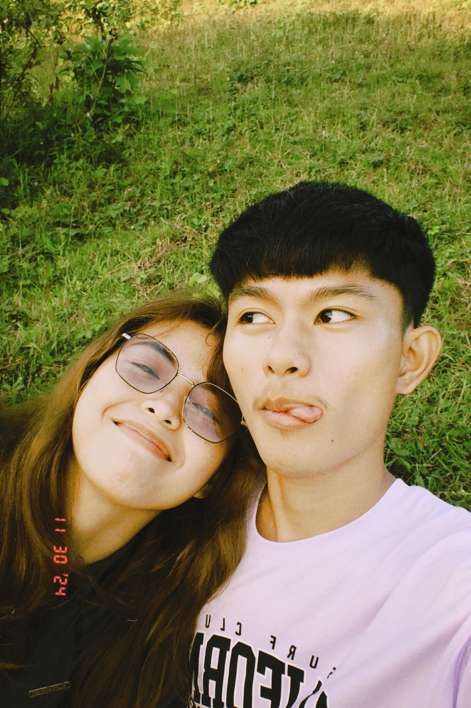
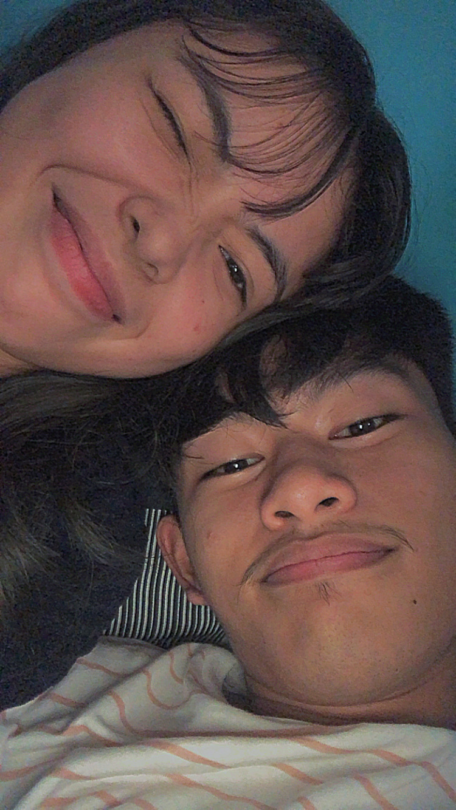
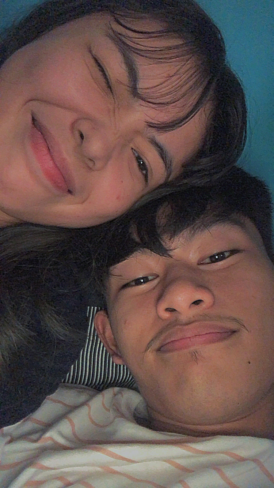
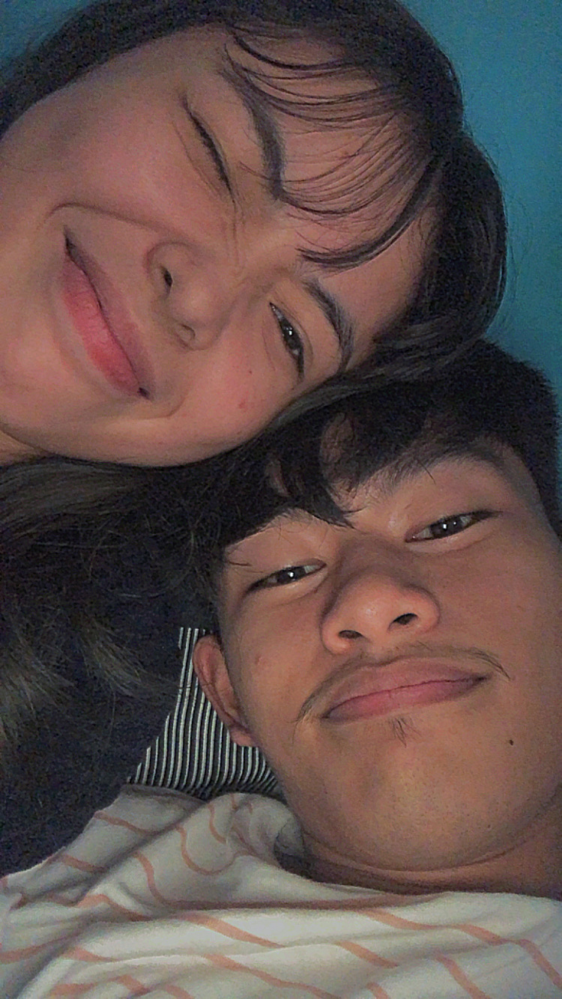

Halik ba talaga Ang gagana sa iyong tingin, hmm ‘Lam mo ba Naiisip ko pa rin mga gabi na magkatabi Oh…ang tangi kong hiling Kahit sa panaginip na lang Oh… I’ll take this as a chance To give you all the time that you need, ohh Sinta Oh kay gandang umibig sa ’yo Ako’y maghihintay sa ’yong pagdating At tatanggapin kita Ohh…sinta Oh kay gandang umibig sa ’yo Ako ay hihimlay sa ’yong tabi At tatanggapin kita Are we old enough To leave the stars tonight We could kiss it right Ikaw ang bulaklak na kumukulay sa paligid natin Oh…ang tangi kong hiling Kahit sa panaginip na lang Oh…I’ll take this as a chance To give you all the time that you need, ohh Sinta Oh kay gandang umibig sa ’yo Ako’y maghihintay sa ’yong pagdating At tatanggapin kita Ohh…sinta Oh kay gandang umibig sa ’yo Ako ay hihimlay sa ’yong tabi At tatanggapin kita, ohh Sinta (‘di mo ba naririnig, sinta) Ohh, sinta Sana’y manatili ka pa Manatili ka kahit saglit Sinta (‘di mo ba naririnig, sinta) Ohh, sinta Sana’y manatili ka pa Manatili ka kahit saglit Ohh…sinta Oh kay gandang umibig sa ’yo Ako’y maghihintay sa ’yong pagdating At tatanggapin kita Oh ohh… Ohh…sinta Oh kay gandang umibig sa ’yo Ako ay hihimlay sa ’yong tabi At tatanggapin kita, ohhHalik ba talaga Ang gagana sa iyong tingin, hmm ‘Lam mo ba Naiisip ko pa rin mga gabi na magkatabi Oh…ang tangi kong hiling Kahit sa panaginip na lang Oh… I’ll take this as a chance To give you all the time that you need, ohh Sinta Oh kay gandang umibig sa ’yo Ako’y maghihintay sa ’yong pagdating At tatanggapin kita Ohh…sinta Oh kay gandang umibig sa ’yo Ako ay hihimlay sa ’yong tabi At tatanggapin kita Are we old enough To leave the stars tonight We could kiss it right Ikaw ang bulaklak na kumukulay sa paligid natin Oh…ang tangi kong hiling Kahit sa panaginip na lang Oh…I’ll take this as a chance To give you all the time that you need, ohh Sinta Oh kay gandang umibig sa ’yo Ako’y maghihintay sa ’yong pagdating At tatanggapin kita Ohh…sinta Oh kay gandang umibig sa ’yo Ako ay hihimlay sa ’yong tabi At tatanggapin kita, ohh Sinta (‘di mo ba naririnig, sinta) Ohh, sinta Sana’y manatili ka pa Manatili ka kahit saglit Sinta (‘di mo ba naririnig, sinta) Ohh, sinta Sana’y manatili ka pa Manatili ka kahit saglit Ohh…sinta Oh kay gandang umibig sa ’yo Ako’y maghihintay sa ’yong pagdating At tatanggapin kita Oh ohh… Ohh…sinta Oh kay gandang umibig sa ’yo Ako ay hihimlay sa ’yong tabi At tatanggapin kita, ohhHalik ba talaga Ang gagana sa iyong tingin, hmm ‘Lam mo ba Naiisip ko pa rin mga gabi na magkatabi Oh…ang tangi kong hiling Kahit sa panaginip na lang Oh… I’ll take this as a chance To give you all the time that you need, ohh Sinta Oh kay gandang umibig sa ’yo Ako’y maghihintay sa ’yong pagdating At tatanggapin kita Ohh…sinta Oh kay gandang umibig sa ’yo Ako ay hihimlay sa ’yong tabi At tatanggapin kita Are we old enough To leave the stars tonight We could kiss it right Ikaw ang bulaklak na kumukulay sa paligid natin Oh…ang tangi kong hiling Kahit sa panaginip na lang Oh…I’ll take this as a chance To give you all the time that you need, ohh Sinta Oh kay gandang umibig sa ’yo Ako’y maghihintay sa ’yong pagdating At tatanggapin kita Ohh…sinta Oh kay gandang umibig sa ’yo Ako ay hihimlay sa ’yong tabi At tatanggapin kita, ohh Sinta (‘di mo ba naririnig, sinta) Ohh, sinta Sana’y manatili ka pa Manatili ka kahit saglit Sinta (‘di mo ba naririnig, sinta) Ohh, sinta Sana’y manatili ka pa Manatili ka kahit saglit Ohh…sinta Oh kay gandang umibig sa ’yo Ako’y maghihintay sa ’yong pagdating At tatanggapin kita Oh ohh… Ohh…sinta Oh kay gandang umibig sa ’yo Ako ay hihimlay sa ’yong tabi At tatanggapin kita, ohhHalik ba talaga Ang gagana sa iyong tingin, hmm ‘Lam mo ba Naiisip ko pa rin mga gabi na magkatabi Oh…ang tangi kong hiling Kahit sa panaginip na lang Oh… I’ll take this as a chance To give you all the time that you need, ohh Sinta Oh kay gandang umibig sa ’yo Ako’y maghihintay sa ’yong pagdating At tatanggapin kita Ohh…sinta Oh kay gandang umibig sa ’yo Ako ay hihimlay sa ’yong tabi At tatanggapin kita Are we old enough To leave the stars tonight We could kiss it right Ikaw ang bulaklak na kumukulay sa paligid natin Oh…ang tangi kong hiling Kahit sa panaginip na lang Oh…I’ll take this as a chance To give you all the time that you need, ohh Sinta Oh kay gandang umibig sa ’yo Ako’y maghihintay sa ’yong pagdating At tatanggapin kita Ohh…sinta Oh kay gandang umibig sa ’yo Ako ay hihimlay sa ’yong tabi At tatanggapin kita, ohh Sinta (‘di mo ba naririnig, sinta) Ohh, sinta Sana’y manatili ka pa Manatili ka kahit saglit Sinta (‘di mo ba naririnig, sinta) Ohh, sinta Sana’y manatili ka pa Manatili ka kahit saglit Ohh…sinta Oh kay gandang umibig sa ’yo Ako’y maghihintay sa ’yong pagdating At tatanggapin kita Oh ohh… Ohh…sinta Oh kay gandang umibig sa ’yo Ako ay hihimlay sa ’yong tabi At tatanggapin kita, ohhHalik ba talaga Ang gagana sa iyong tingin, hmm ‘Lam mo ba Naiisip ko pa rin mga gabi na magkatabi Oh…ang tangi kong hiling Kahit sa panaginip na lang Oh… I’ll take this as a chance To give you all the time that you need, ohh Sinta Oh kay gandang umibig sa ’yo Ako’y maghihintay sa ’yong pagdating At tatanggapin kita Ohh…sinta Oh kay gandang umibig sa ’yo Ako ay hihimlay sa ’yong tabi At tatanggapin kita Are we old enough To leave the stars tonight We could kiss it right Ikaw ang bulaklak na kumukulay sa paligid natin Oh…ang tangi kong hiling Kahit sa panaginip na lang Oh…I’ll take this as a chance To give you all the time that you need, ohh Sinta Oh kay gandang umibig sa ’yo Ako’y maghihintay sa ’yong pagdating At tatanggapin kita Ohh…sinta Oh kay gandang umibig sa ’yo Ako ay hihimlay sa ’yong tabi At tatanggapin kita, ohh Sinta (‘di mo ba naririnig, sinta) Ohh, sinta Sana’y manatili ka pa Manatili ka kahit saglit Sinta (‘di mo ba naririnig, sinta) Ohh, sinta Sana’y manatili ka pa Manatili ka kahit saglit Ohh…sinta Oh kay gandang umibig sa ’yo Ako’y maghihintay sa ’yong pagdating At tatanggapin kita Oh ohh… Ohh…sinta Oh kay gandang umibig sa ’yo Ako ay hihimlay sa ’yong tabi At tatanggapin kita, ohhHalik ba talaga Ang gagana sa iyong tingin, hmm ‘Lam mo ba Naiisip ko pa rin mga gabi na magkatabi Oh…ang tangi kong hiling Kahit sa panaginip na lang Oh… I’ll take this as a chance To give you all the time that you need, ohh Sinta Oh kay gandang umibig sa ’yo Ako’y maghihintay sa ’yong pagdating At tatanggapin kita Ohh…sinta Oh kay gandang umibig sa ’yo Ako ay hihimlay sa ’yong tabi At tatanggapin kita Are we old enough To leave the stars tonight We could kiss it right Ikaw ang bulaklak na kumukulay sa paligid natin Oh…ang tangi kong hiling Kahit sa panaginip na lang Oh…I’ll take this as a chance To give you all the time that you need, ohh Sinta Oh kay gandang umibig sa ’yo Ako’y maghihintay sa ’yong pagdating At tatanggapin kita Ohh…sinta Oh kay gandang umibig sa ’yo Ako ay hihimlay sa ’yong tabi At tatanggapin kita, ohh Sinta (‘di mo ba naririnig, sinta) Ohh, sinta Sana’y manatili ka pa Manatili ka kahit saglit Sinta (‘di mo ba naririnig, sinta) Ohh, sinta Sana’y manatili ka pa Manatili ka kahit saglit Ohh…sinta Oh kay gandang umibig sa ’yo Ako’y maghihintay sa ’yong pagdating At tatanggapin kita Oh ohh… Ohh…sinta Oh kay gandang umibig sa ’yo Ako ay hihimlay sa ’yong tabi At tatanggapin kita, ohhHalik ba talaga Ang gagana sa iyong tingin, hmm ‘Lam mo ba Naiisip ko pa rin mga gabi na magkatabi Oh…ang tangi kong hiling Kahit sa panaginip na lang Oh… I’ll take this as a chance To give you all the time that you need, ohh Sinta Oh ohh… Ohh…sinta ahh
Our Images


 

